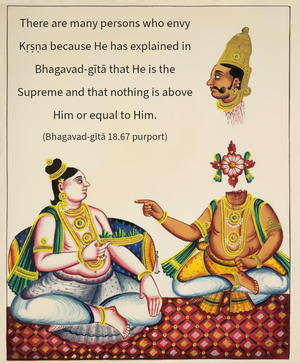

This confidential knowledge may never be explained to those who are not austere, or devoted, or engaged in devotional service, nor to one who is envious of Me.

Persons who have not undergone the austerities of the religious process, who have never attempted devotional service in Kṛṣṇa consciousness, who have not tended a pure devotee, and especially those who are conscious of Kṛṣṇa only as a historical personality or who are envious of the greatness of Kṛṣṇa should not be told this most confidential part of knowledge. It is, however, sometimes found that even demoniac persons who are envious of Kṛṣṇa, worshiping Kṛṣṇa in a different way, take to the profession of explaining Bhagavad-gītā in a different way to make business, but anyone who desires actually to understand Kṛṣṇa must avoid such commentaries on Bhagavad-gītā. Actually the purpose of Bhagavad-gītā is not understandable to those who are sensuous. Even if one is not sensuous but is strictly following the disciplines enjoined in the Vedic scripture, if he is not a devotee he also cannot understand Kṛṣṇa. And even when one poses himself as a devotee of Kṛṣṇa but is not engaged in Kṛṣṇa conscious activities, he also cannot understand Kṛṣṇa. There are many persons who envy Kṛṣṇa because He has explained in Bhagavad-gītā that He is the Supreme and that nothing is above Him or equal to Him. There are many persons who are envious of Kṛṣṇa. Such persons should not be told of Bhagavad-gītā, for they cannot understand. There is no possibility of faithless persons’ understanding Bhagavad-gītā and Kṛṣṇa. Without understanding Kṛṣṇa from the authority of a pure devotee, one should not try to comment upon Bhagavad-gītā.